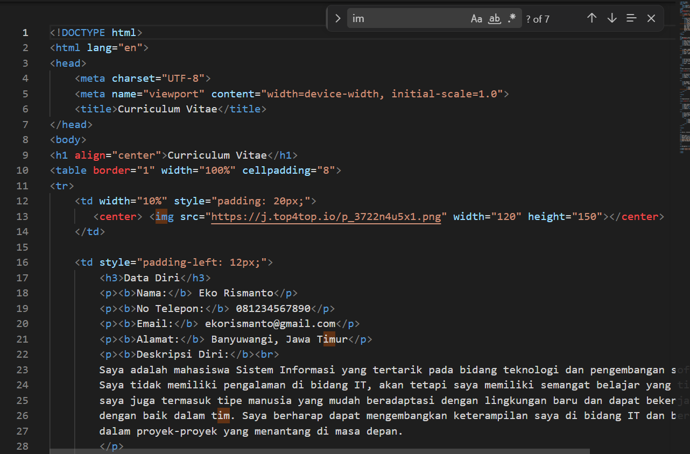
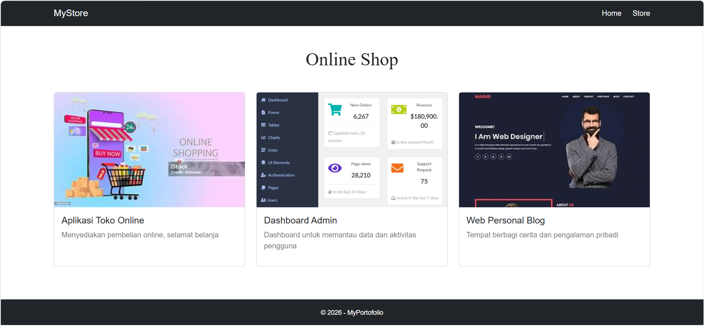

Hi, I'm Aris Creative Web Developer
Seorang web developer yang fokus membangun antarmuka web yang bersih, fungsional, dan responsif menggunakan teknologi modern seperti HTML, CSS, dan framework front-end.

Seorang web developer yang fokus membangun antarmuka web yang bersih, fungsional, dan responsif menggunakan teknologi modern seperti HTML, CSS, dan framework front-end.

Proyek dasar struktur halaman web menggunakan elemen HTML seperti heading, paragraf, list, dan tautan.

Proyek pembuatan form input data dengan field teks, pilihan, dan tombol kirim untuk latihan validasi dasar.

Implementasi halaman responsif menggunakan komponen Bootstrap untuk mempercepat pengembangan antarmuka.